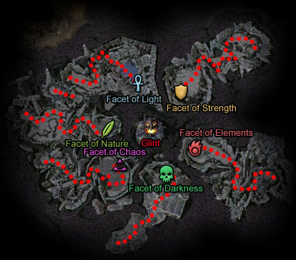

Elite: Gladiator's Defense
M19
The Dragon's Lair
◉ Mission Map

Click to enlarge · Local cache · Wiki
Summary (click to expand)
Having completed the trials for Ascension , you must now seek out the ancient dragon , Glint . She will tell you how to strike back at the White Mantle as well as tell you who their masters really are.
Region: Crystal Desert · Mission: 19 of 25 · Type: Cooperative
✓ Objectives
Gain audience with the prophet Glint.
- Defeat the Facet of Light.
- Defeat the Facet of Nature.
- Defeat the Facet of Chaos.
- Defeat the Facet of Darkness.
- Defeat the Facet of Elements.
- Defeat the Facet of Strength.
- *BONUS* Defeat Glint.
→ Walkthrough
To reach Glint, you must pass through six chambers, each representing one of the core professions. Four of these rooms have a global environmental effects to hinder players from reaching the Facet at the opposite end of the chamber. Each Facet represents one profession, and when defeated opens a portal to the next chamber. The order of the chambers is always the same. The portal to the first Facet's chamber is opened after a player talks with the Forgotten Gate Keeper.
Note: Each gate has a brief cinematic that shows your party being teleported. Most people skip these, but be warned: the last cinematic also contains your conversation with Glint. If you wish to see this conversation do not skip the teleportation cinematic after the Facet of Strength.
- Facet of Light
 Domain of Health Draining - While you are in this area you suffer from -3 Health degeneration.
Domain of Health Draining - While you are in this area you suffer from -3 Health degeneration.
As a result of the environmental effect healers will be constantly active, and group-healing spells such as Heal Party are helpful to combat the effect. Luckily, the foes you face in this room are not difficult. As with the desert missions, Forgotten Sages should be the priority target. You'll also fight Enchanted Sword and Hammer pairs. Typically, players follow the western edge of the room, sometimes avoiding a few foes. Try to kill off the groups before engaging the Facet of Light boss. It uses Shield of Regeneration and Guardian as its primary defense. Enchantment removal, knock down or simply overwhelming damage per second should kill it quickly, opening the portal to the next room.
- Facet of Nature
 Domain of Slow - While you are in this area your movement is slowed.
Domain of Slow - While you are in this area your movement is slowed.
In this room, you'll fight numerous Enchanted Bows, many of which start up on ledges. However, a long/flatbow shot usually will cause them to run around to lower ground. Again, it is common for players to hug the left wall when going through this room to attempt to avoid a group or two. The Facet of Nature uses Melandru's Resilience, so either avoid using weak hexes/conditions or have a player prepared with a stance removing skill (which is useful to bring along for the bonus anyway).
- Facet of Chaos
This room has no environmental effect. Instead, you'll fight swarms of Crystal Spiders, with Forgotten Illusionists backing them up. The spiders spam Shatter Enchantment and Hex Breaker, so be wary of hex and enchantment usage. Some of the Illusionists hide behind solid crystal walls that do not hinder their indirect spells, but which shield them from melee and projectile assault. As such, a few strong indirect spells of your own are useful here, but be sure to watch out for their Chaos Storm. It's worth taking the time to destroy them with spells before engaging new groups of spiders, because together these opponents can present a tough battle, especially in hard mode. The back of the room has a twisted path leading to the Facet of Chaos. Pairs of Illusionists will cast across the low walls of the path, but projectile attacks can reach them.
- Facet of Darkness
 Domain of Energy Draining - While you are in this area you suffer from -1 Energy degeneration.
Domain of Energy Draining - While you are in this area you suffer from -1 Energy degeneration.
In addition to the environmental effect, both allies and foes alike are kept enchanted under a low powered Death Nova that deals 26 damage and poisons for 15 seconds. The Rock-Eater Scarabs like to use Frenzy, and die easily because of it. If many die at once, the damage from the Death Novas can add up quickly. Also, Forgotten Cursebearers will use the corpses to heal, but they shouldn't pose much of a threat. Thanks to the constant Death Nova, minion armies can make this room very quick. The Facet of Darkness at the back is quite easy.
- Facet of Elements
 Domain of Elements - While you are in this area you are the target of chaotic natural forces, specifically environmental versions of Fire Storm, Maelstrom, Chain Lightning and Eruption
Domain of Elements - While you are in this area you are the target of chaotic natural forces, specifically environmental versions of Fire Storm, Maelstrom, Chain Lightning and Eruption
The environmental effects in this room are limited to inside the wards throughout the area. Try not to stand in these wards while fighting. Crystal Guardians guard the halls here and carry a nasty Shock/Aftershock combo. Luckily, they rarely use the combo in the correct sequence. Forgotten Arcanists will often be in side rooms, intercepting players in the main corridor as they pass by. Defeat the Facet of Elements at the back to proceed to the last Facet.
- Facet of Strength
Every 25 seconds, all players are knocked down for 5 seconds. Skills such as "I Am Unstoppable!", "Don't Trip!", Ward of Stability, Balanced Stance and Dolyak Signet will prevent the knock down. Your foes are mostly Sword/Hammer pairs, although you may run into groups with a Crystal Spider and Crystal Guardian. Kill the Guardians first, as Aftershock is more likely to deal its extra damage while the healers are helpless on the ground; this is especially true in Hard Mode. Defeat the Facet of Strength to finally meet Glint.
★ Bonus
To gain the bonus you need to defeat Glint. Instead of using the portal opened during the cinematic, pick up one of her Dragon Eggs and she will turn hostile. This bonus is unique in that even if the entire party wipes while attempting it, they will still receive credit for the mission and continue to Droknar's Forge.
Since Glint is friendly until the eggs are touched, set up traps and spirits before she turns hostile.
Glint uses four skills:
 Crystal Haze - An AoE hex that can render casters useless, spread before the battle. Revealed Hex/Inspired Hex are optimal counters as with all monster skill hexes, they are not replaced and recharge instantly. For those using henchmen/heroes, set the heroes to avoid combat and block healing skills for the duration of this dangerous hex.
Crystal Haze - An AoE hex that can render casters useless, spread before the battle. Revealed Hex/Inspired Hex are optimal counters as with all monster skill hexes, they are not replaced and recharge instantly. For those using henchmen/heroes, set the heroes to avoid combat and block healing skills for the duration of this dangerous hex.
 Jagged Crystal Skin - A stance that causes massive damage to melee attackers since it triggers on physical damage. Use elemental weapons, or skills that convert your damage types e.g.: Judge's Insight, Heart of Holy Flame and/or Greater Conflagration to negate its effects.
Jagged Crystal Skin - A stance that causes massive damage to melee attackers since it triggers on physical damage. Use elemental weapons, or skills that convert your damage types e.g.: Judge's Insight, Heart of Holy Flame and/or Greater Conflagration to negate its effects.
 Crystal Bonds - A hex spell that removes and prevents enchantments to target but doesn't apply to self-enchantments (dervish) nor party wide spells e.g. Aegis. It only inhibits protection monks.
Crystal Bonds - A hex spell that removes and prevents enchantments to target but doesn't apply to self-enchantments (dervish) nor party wide spells e.g. Aegis. It only inhibits protection monks.
 Crystal Hibernation - Used at half way through the battle. Grants her health regeneration and converts taken damage to heals. But takes five second to activate, leaving it vulnerable to interrupts.
Crystal Hibernation - Used at half way through the battle. Grants her health regeneration and converts taken damage to heals. But takes five second to activate, leaving it vulnerable to interrupts.
If using henchmen/heroes, avoid melee characters since they tend to die very fast under the effects of Jagged Crystal Skin. Ranged attacks put less stress on your healers. Flag the non-melee away from the dragon to avoid Jagged Crystal Skin.
◆ Hard Mode
No dedicated Hard Mode section on the wiki — expect tougher foes and adjusted mechanics. See walkthrough notes.
☠ Bosses & Elites
Elite: Melandru's Resilience
Elite: Shield of Regeneration
Elite: Grenth's Balance
Elite: Mantra of Recall
Elite: Lightning Surge
✦ Tips & Notes
Skill recommendations
- Party wide healing skills such as Heal Party, Protective Was Kaolai or Heaven's Delight.
- Anti-knock down.
- Enchantment removal.
- For Glint
- Skill interrupts such as Cry of Frustration, Cry of Pain or Leech Signet.
- Stance removal. It is also useful versus the Facets of Nature and Strength as well as removing Jagged Crystal Skin on Glint.
- Spoil Victor - effective due to her high health.
- Wastrel's Worry - effective because hexes expire twice as fast, leading to a very high damage rate.
- Pain Inverter - particularly effective versus Jagged Crystal Skin. Also useful against Crystal Guardians due to their AoE damage.
- Hex removal such as Inspired Hex or Revealed Hex to counter Crystal Haze. The overcast this hex causes will quickly shut down spellcasters if it is not removed.
Notes
| The Guild Wars 2 Wiki has an article on Glint's Lair. |
- Two of the Facets have elite skills that cannot be captured anywhere else in Prophecies: Gladiator's Defense and Shield of Regeneration.
- After killing each Facet, a player must cross a portal-like gate that triggers a cinematic. When it concludes, party members are teleported to another enclosed domain within the area, leaving behind miniatures, spirits, allies from summoning stones, and Heroes of players that have left the area or disconnected. Minions are brought along with the party however.
- This mission will be completed after reaching Glint. A final portal will appear, and going through it will take the entire party to Droknar's Forge. Make sure you warn other party members not to cross that portal, if you want to attempt the bonus objective.
- Looking up in the sky towards the center of the area, players will see a crystal pillar with 6 crystal rings around it. They show the progress in the area by changing from crystal rings to rings of light.
- Completion of this mission will fill in page #12 of The Flameseeker Prophecies storybook.